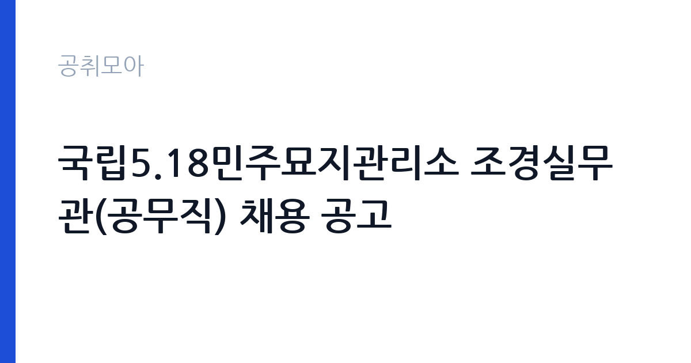

[국가기관] 국립5.18민주묘지관리소 조경실무관(공무직) 채용 공고
국가보훈부 국립5.18민주묘지관리소 · 전남 · 마감 2026-11-13 (D-11) · 출처 나라일터

한눈에 보는 모집 조건
| 기관 | 국가보훈부 국립5.18민주묘지관리소 |
|---|---|
| 공고명 | 국립5.18민주묘지관리소 조경실무관(공무직) 채용 공고 |
| 고용형태 | 공무직 |
| 근무지 | 전남 |
| 게시일 | 2026-11-02 |
| 마감일 | 2026-11-13 (D-11) |
지원자격, 이렇게 읽으세요
- 공무직근로자 1명
- 접수 ~2026-11-13 마감
- 세부 조건은 원문 공고문 확인
공무직 근로자는 공무원이 아니라 근로기준법이 적용되는 근로자이지만 기간의 정함이 없는 무기계약으로 채용되는 경우가 많아 정년까지 근무가 가능합니다. 채용은 공무원 시험과 달리 기관의 자체 전형으로 진행되고 인사 규정과 임금표를 적용받습니다. 이번 공고는 국가보훈부 국립5.18민주묘지관리소에서 직접 진행하는 자체 전형으로, 응시자격과 제출서류는 공고문에 항목별로 제시됩니다. 조경 직무는 관련 자격이나 경력을 우대합니다. 조경기능사, 수목치료기술자, 원예 관련 자격이 있으면 유리합니다. 장비 운용 경험과 운전면허 소지 여부도 자주 확인하는 항목입니다. 동절기 한시 채용은 근무 기간이 짧고 야외 작업 비중이 높습니다. 건강 상태와 현장 근무 가능 여부가 실질적인 조건입니다. 서류는 접수 마감 이후 보완이 되지 않으므로 자격 요건과 증빙 서류를 마감 전에 모두 갖춰야 합니다. 공고문에 명시된 우대 사항은 해당 여부를 확인해 증빙을 첨부해야 가점이 반영됩니다. 자격증은 유효 기간과 등록 상태를 확인해야 합니다. 갱신이 필요한 자격이라면 갱신 여부를 먼저 점검하십시오.
이 공고의 포인트
이 공고의 첫 번째 포인트는 고용 형태입니다. 무기계약으로 채용되면 정년까지 근무가 가능해 재계약 부담이 없습니다. 반대로 기간제로 채용되는 공고라면 계약 기간을 먼저 확인해야 합니다. 두 번째는 업무 범위가 명확하다는 점입니다. 조경·수목 관리 직무로 채용되므로 배치 이후 담당 업무가 크게 흔들리지 않습니다. 세 번째는 근무지입니다. 전남 지역 근무로 수도권 공고에 비해 지원자 분포가 넓지 않아 상대적으로 경쟁이 분산되는 경우가 있습니다. 공고가 올라온 지 얼마 되지 않아 아직 지원자 수가 많지 않을 가능성이 있습니다. 다만 선발 인원이 1명으로 많지 않아 자격을 갖춘 지원자가 몰리면 경쟁률이 높아질 수 있습니다.
전형은 어떻게 진행되나
1차 서류, 2차 면접의 2단계로 진행되는 구성이 일반적입니다. 서류에서는 자격 요건과 경력 증빙을 확인하고, 면접에서는 실제 업무 수행 능력과 조직 적응을 봅니다. 직무에 따라 필기시험이나 실기, 컴퓨터 활용 시험이 추가되기도 하므로 공고문의 전형표를 먼저 확인하십시오. 단계별로 합격자만 다음 전형에 응시할 수 있고, 단계마다 응시 자격 확인 서류를 다시 제출해야 하는 경우가 있습니다. 최종합격자 발표 후에는 신원조회와 채용 신체검사가 남아 있습니다. 제출서류 원본은 최종 단계에서 다시 요구되는 경우가 있어 사본과 함께 보관하십시오.
이런 분께 추천해요
- 조경·수목 관리 경력이나 관련 자격이 있는 분
- 야외 작업과 장비 운용에 익숙한 분
- 계절별 작업 일정에 맞춰 근무할 수 있는 분
지원 전 체크리스트
- 응시자격 요건과 경력 기준을 충족하는가 — 경력은 증명서로 입증해야 합니다
- 무기계약 여부와 정년 기준을 공고문에서 확인했는가
- 제출서류 목록을 모두 준비했는가 — 누락 시 서류 단계에서 탈락합니다
- 접수 마감 2026-11-13 이전에 접수 방식을 확인해 제출했는가
모집 일정과 제출 타이밍
공고 게시일은 2026-11-02, 접수 마감은 2026-11-13입니다. 준비 기간은 약 11일로 서류 준비와 자격 증빙을 함께 처리하기에는 넉넉하지 않은 편입니다. 첫 이틀 안에 공고문과 첨부 서식을 내려받아 요건을 확인하고 남은 기간에 증빙 서류를 발급받는 일정이 현실적입니다. 면접은 서류 합격자 발표 후 짧은 간격으로 진행되는 경우가 많으므로 서류 제출과 동시에 면접 준비를 시작하는 편이 안전합니다. 마감일에는 접수 시스템이 몰리므로 하루 전까지 제출을 마치는 것이 좋습니다. 공휴일이 끼어 있으면 증명서 발급이 늦어질 수 있으니 발급 일정을 앞당기십시오. 전남 근무지는 도서·산간 지역이 포함될 수 있어 근무지 세부 주소를 반드시 확인하십시오. 마감까지 2주 안팎이 있어 준비할 시간은 있지만 미루면 촉박해집니다. 선발 인원이 한두 명 수준이라 지원자 개개인의 서류 완성도가 그대로 평가에 반영됩니다.
직무 이해하기: 국가기관
국립5·18민주묘지관리소는 5·18민주화운동 희생자를 기리는 국립묘지를 관리하는 국가보훈부 소속 기관입니다. 묘역과 시설을 유지하고 참배객을 안내하며, 조경과 시설 관리 인력을 공무직으로 채용합니다. 조경 업무는 수목과 화단, 잔디를 관리해 시설 경관을 유지하는 일입니다. 계절에 따라 전정과 가지치기, 제초, 관수, 병해충 방제 작업이 이어집니다. 동절기에는 월동 준비와 방한 조치, 하절기에는 잡초 제거와 병해충 대응이 중심이 됩니다. 예초기와 전정기 같은 장비를 사용하므로 안전 장비 착용이 필수입니다. 야외 작업이 대부분이라 날씨에 따라 작업 일정이 조정됩니다. 업무는 혼자 처리하기보다 부서 단위로 나눠 진행되므로 담당 구역과 협업 범위를 입사 초에 확인하는 것이 중요합니다. 업무 매뉴얼과 지침이 문서로 정리되어 있어 절차를 익히면 반복 업무는 빠르게 손에 붙습니다.
자기소개서 작성 팁
조경 지원서는 실제로 다뤄본 수목과 작업 종류를 구체적으로 쓰는 것이 효과적입니다. 관리한 면적이나 수목 수, 수행한 작업 주기를 수치로 제시하십시오. 장비 운용 능력과 안전 수칙 준수는 반드시 언급해야 합니다. 계절별 작업 계획을 세워본 경험이 있다면 강점이 됩니다. 구성은 지원 동기, 직무 경험, 기여 방안 순서가 무난합니다. 지원 동기는 국가보훈부 국립5.18민주묘지관리소의 사업 중 본인이 관심을 가진 부분을 한 가지로 좁혀 서술하고 추상적인 표현은 줄이십시오. 직무 경험은 담당했던 업무와 규모, 결과를 수치로 제시하면 설득력이 올라갑니다. 기여 방안은 입사 후 첫 3개월과 1년 계획으로 나눠 쓰면 준비도가 드러납니다.
면접 준비 포인트
면접에서는 수목 관리 지식과 안전 의식을 확인합니다. 병해충이 발견됐을 때 어떻게 판단하고 조치할지, 예초 작업 중 안전사고를 어떻게 예방하는지 묻습니다. 계절별 작업 주기를 알고 있는지도 평가 요소입니다. 야외 작업과 장비 사용 경험을 구체적으로 답하십시오. 답변은 상황, 판단, 조치의 순서로 정리하면 전달이 분명해집니다. 모르는 질문에는 모른다고 밝히고 확인 방법을 제시하는 편이 억지 답변보다 낫습니다. 마지막에는 근무 의사와 함께 2026-11-13 이후 일정에 언제든 응할 수 있다는 점을 전달하십시오. 모르는 질문에 추측으로 답하면 감점 요인이 되므로, 확인 후 답하겠다고 밝히는 편이 안전합니다.
급여·근무조건 읽는 법
조경 직무의 보수는 기간제 근로자 임금 기준에 따라 월급 또는 일급으로 지급되며, 동절기 한시 채용은 근무 개월 수가 짧습니다. 2026년 최저임금은 시급 10,320원, 월 환산 2,156,880원이므로 이를 기준으로 최소 수준을 가늠할 수 있습니다. 작업복과 장비 지급 여부, 식사 제공 여부도 총보상에 영향을 줍니다. 구체적인 금액과 근무 기간은 공고문에서 확인하십시오. 다만 국가보훈부 국립5.18민주묘지관리소의 보수 수치는 이 글에서 확인된 공시 자료가 없어 추정해 제시하지 않았습니다. 공고문 처우 항목과 첨부된 보수표를 기준으로 확인하십시오. 알리오 2025년 결산 공시 기준 공공기관 전체 일반정규직 1인당 평균보수는 7,376만 9천원, 신입사원 평균초임은 4,031만 6천원입니다(무기계약직 미포함). 2026년 적용 최저임금은 시급 10,320원, 월 환산 2,156,880원(주 40시간·209시간 기준)입니다. 고용노동부 고시 제2025-47호로 확정된 금액입니다. 공고문에 금액이 제시되지 않은 항목은 원문 보수표나 처우 설명에서 확인해야 하며 확인되지 않은 수치는 쓰지 않는 것이 원칙입니다. 비교할 때는 월 급여뿐 아니라 상여·명절휴가비·복지포인트·초과근무수당까지 포함한 연간 총액으로 계산하십시오. 기간제라면 계약 기간 동안의 총액을, 무기계약이라면 호봉 상승과 정년까지의 누적 소득을 기준으로 판단하는 편이 정확합니다.
자주 묻는 질문
- 선발 인원은 몇 명인가요?
공고문 기준 1명입니다. 직종별로 인원이 나뉘는 경우가 있으니 모집분야 항목을 함께 확인하십시오. - 근무지는 어디인가요?
전남 지역의 국가보훈부 국립5.18민주묘지관리소 소속 근무지입니다. 세부 주소와 출퇴근 조건은 원문 공고문에서 확인할 수 있습니다. - 보수는 얼마인가요?
채용 신분(공무직)과 기관 임금 규정에 따라 정해지며 구체적인 금액은 공고문 처우 항목에 제시됩니다. 금액이 공개되지 않은 경우에는 원문의 보수표를 확인하십시오.
함께 보면 좋은 공고
[국가기관] 민주평화통일자문회의 경기지역회의 기간제근로자 채용 공고 — 마감 2026-11-13[국가기관] 2026년도 제6회 경주우체국 상시계약집배원 채용 공고 — 마감 2026-11-09[국가기관] 2026년도 제15회 포항우체국 상시계약집배원 채용시험 공고 — 마감 2026-11-10출처: 나라일터 공개정보를 바탕으로 공취모아가 정리한 안내글입니다. 모집 조건·일정은 변경될 수 있으니 지원 전 반드시 원문 공고문을 확인하세요. 본 글은 정보 제공용이며 합격을 보장하지 않습니다.